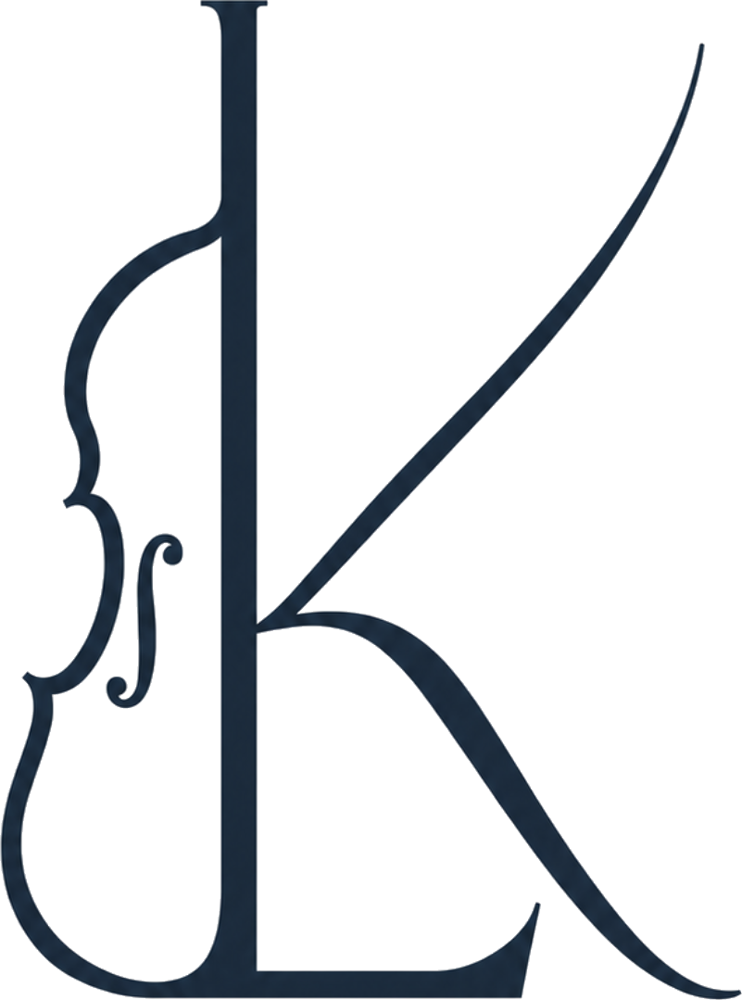
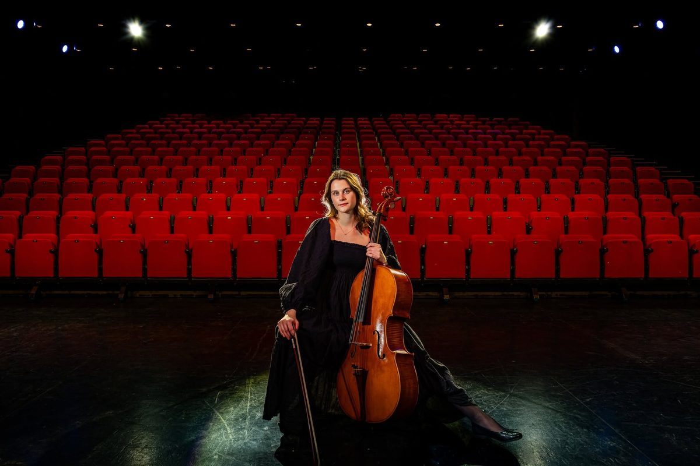
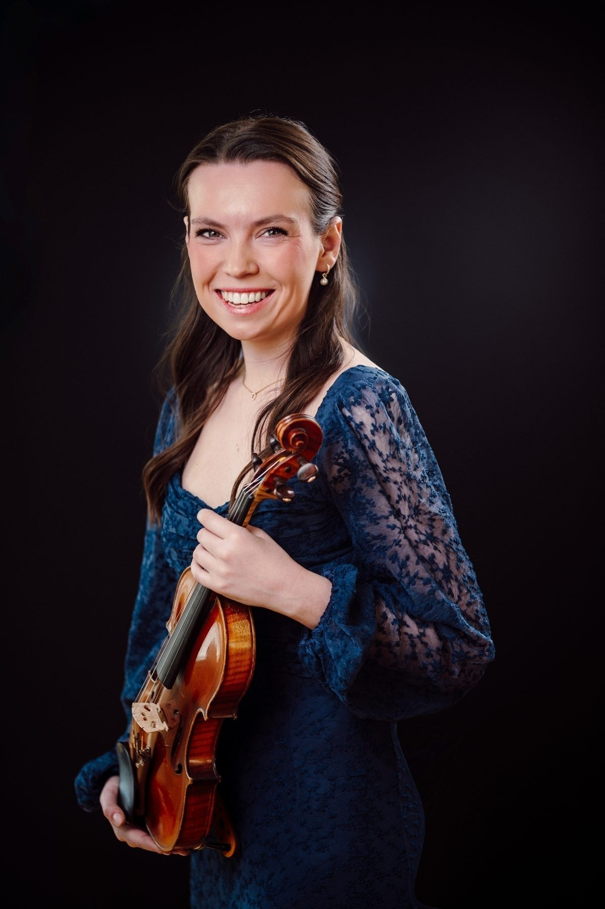

Om oss
Vi skaper stemning og tilstedeværelse. Ved ønske om flere musikere — for eksempel strykekvartett, piano eller sang — kan vi organisere dette.

Duoen har bakgrunn fra klassisk utdanning og har spilt sammen siden 2022. De finner den rette musikken til nettopp din anledning, og legger vekt på god dialog i forkant. Enten dere ønsker stemningsfull bakgrunnsmusikk, musikalske innslag eller en liten konsert, tilpasses program og uttrykk etter deres ønsker.

Foto: Amanda Sotberg
Lea Hustad er klassisk cellist, kammermusiker og lærer fra Trondheim. Hun har fullført en bachelor i utøvende musikk innen klassisk ved NTNU Institutt for musikk hos Øyvind Gimse. For tiden går hun praktisk-pedagogisk utdanning ved NTNU, i tillegg til å jobbe som freelance musiker. Hun har de siste årene vært å se på ulike arenaer deriblant som praksisstudent i Trondheim Symfoniorkester og Opera, i Trondheimsolistene og som teatermusiker i Marenspelet på Hitra. I tillegg har hun de siste årene deltatt på ulike festivaler i Norge, deriblant Trondheim Kammermusikkfestival, Fjord Cadenza i Ålesund og Valdres Sommersymfoni.

Foto: Ole Wuttudal
Kristin Tennfjord Engås er utøvende klassisk fiolinist og fullførte sin bachelor i 2026 i Trondheim med professor Marianne Thorsen. Kristin er aktiv i flere orkestre og ensembler blant annet i TrondheimSolistene, Bergen Filharmoniske ungdomsorkester (BFUng), Studentersamfundets symfoniorkester (konsertmester), Ålesund symfoniorkester og Ensemble TRD (styreleder). I tillegg har hun i flere år deltatt på Trondheim kammermusikkfestival, Ålesund kammermusikkfestival, Valdres Sommersymfoni og Fjord Cadenza. Hun har også deltatt på diverse kurs og konkurranser i inn- og utland og blitt tildelt stipender fra blant annet Sparebanken Møre og Creo. Kristin har vært solist med blant annet Luftforsvarets musikkorps og Studentersamfundets symfoniorkester.
Velg anledning og send en forespørsel, så lager vi et tilbud tilpasset dere.